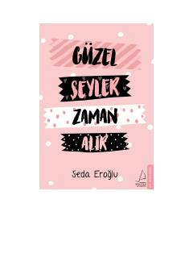

GŞHayotdagi go'zal narsalarga erishish uchun sabr va vaqt kerakligini anglatuvchi motivatsion asar.
Ushbu kitob insonning o'z ichki dunyosiga qilgan sayohati va hayotiy qiyinchiliklarni sabr bilan yengib o'tish haqidagi mulohazalarni o'z ichiga oladi. Muallif o'z tajribalari va kuzatuvlari orqali o'quvchiga hayotning go'zal lahzalarini kutish va qadrlashni o'rgatadi.